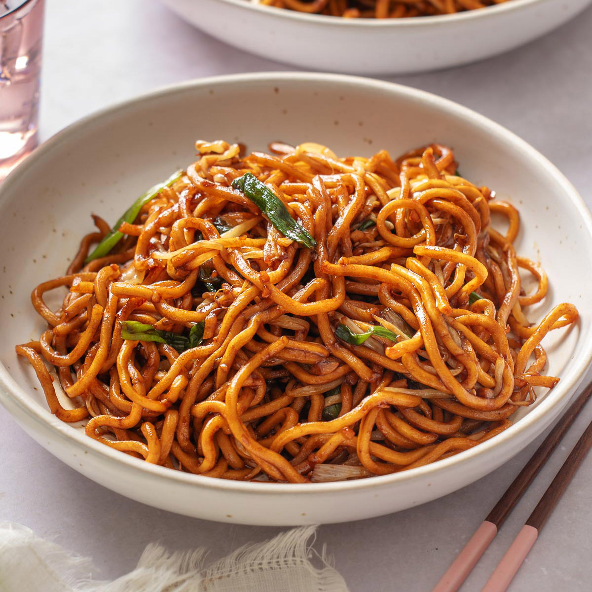

Noodles are a popular and easy-to-cook food enjoyed by people of all ages. Made from wheat or rice flour, noodles can be prepared in a short time and are often served hot. They are commonly eaten as a quick meal or snack, especially when time is limited.
Noodles can be cooked in many styles, such as plain, vegetable, or with chicken and eggs. By adding vegetables and spices, noodles become more nutritious and flavorful. Because of their taste and convenience, noodles are loved worldwide.